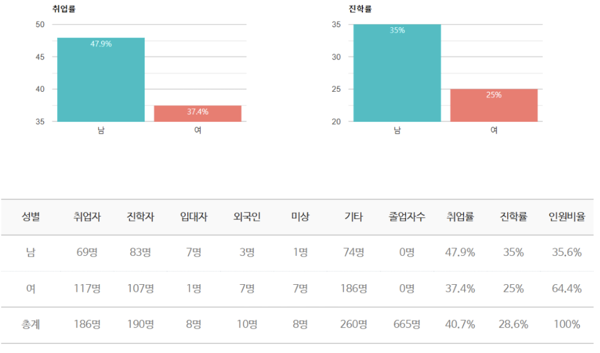
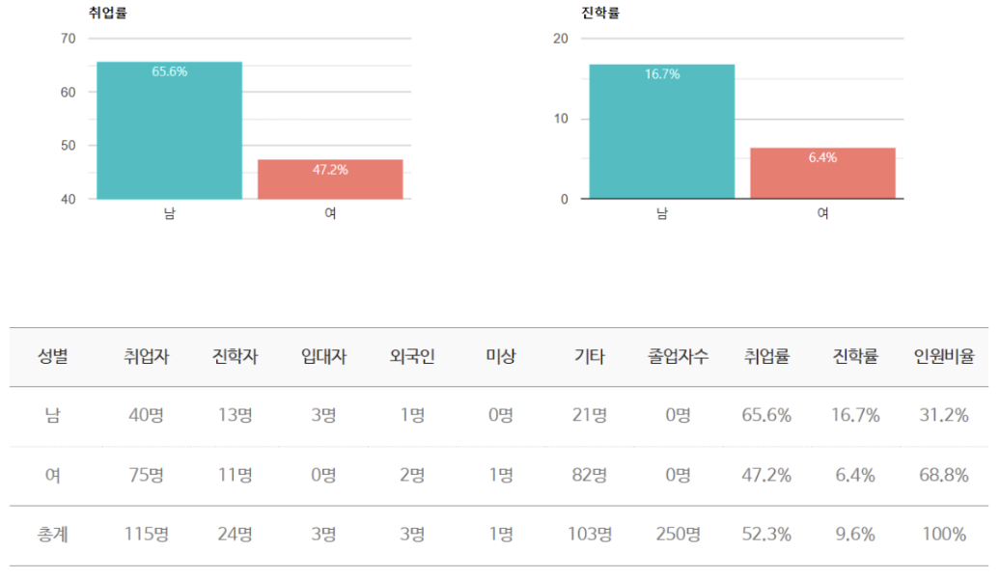

“주님 사랑! 사람 사랑!”
전공 : 상담심리학 전공, 사회복지학 전공
한동대학교 상담심리학 전공은 아동·청소년상담, 노인상담, 진로상담 등 다양한 상담 분야와 발달심리, 성격심리, 학습심리 등 심리학 이론을 함께 학습할 수 있는 과정을 제공합니다. 학생들은 상담과 심리학의 균형 있는 교육을 통해 전문적 상담 역량과 깊이 있는 심리학적 이해를 쌓아갑니다. 이를 통해 다양한 연령대와 분야에서 심리적 지원을 할 수 있는 전문가로 성장할 수 있습니다.
상담실습1
심리평가
연구방법론
심리사회통계학
→ 4과목 중 2과목 선택
상담실습1
심리평가
연구방법론
심리사회통계학
→ 4과목 중 2과목 선택
예술심리치료학회 (FAMM)
Film (영화), Art (미술), Music (음악), Movement (동작) 네 가지 예술치료 분과를 공부하는 학회입 니다. 학생들은 모여서 기존의 전공지식을 바탕으로 하여 다양한 예술심리치료 분과에 대한 확장적인 스터디를 합니다. 또한 외부의 다양한 기관에 예술심리치료 봉사활동을 나감으로써 지역사회에 공헌하 는 활동을 하고 있습니다.
한동임상심리학회
한동임상심리학회는 미래의 Christian 임상심리전문가로서 어떠한 소양과 역량을 길러나가야할지 함 께 공부하고 토론하는 커뮤니티입니다. 임상심리에 관련된 논문 리딩과 스터디를 하며 국내 및 국외 임 상심리 대학원 진학을 준비하고 있습니다.
코칭네이버스
코칭(Coaching)을 통해 저소득층 아동을 돕기 위해 설립된 학회입니다. 함께 코칭을 배우고, 각자의 전공을 살려서 포항 지역 아이들에게 1:1 멘토링을 제공합니다.
중독재활학회
중독재활학회는 중독에 대한 이해를 넓히고 중독된 개인 및 사회, 공동체를 살리는 전문가로 성장하는 것을 목표로 하는 학회입니다. 주요 활동으로는 중독에 관한 이론을 공부하고 관련 기관 방문과 캠페인 활동이 있습니다. 또한 통계와 연구방법론에 대한 스터디를 꾸준하게 진행하여 연구 및 자료조사에 필 요한 역량을 기릅니다. 또한 이를 바탕으로 포스터를 게재하고 국내외 학술대회에 참석합니다
산업조직심리학회
사회및산업조직심리학회는 매 학기 한 가지 연구주제를 가지고 이혜주 교수님과 함께 학기당 1개의 영어 학술논문게재를 목표로 공부합니다. 인사선발 현장에 관한 연구, 의무교육상황 시 교육유형(오프라인 vs 온라인)에 따른 지루함 상태 차이, 지루함과 종교활동 및 자기통제활동 등과 같은 주제를 가지고 실험연 구를 진행합니다.
추계학술대회
졸업생 특강
Field Trip(기관 방문)
사례발표회
상담관련기관
학교상담교사, 한국도박문제관리센터, 청소년상담센터, Wee Center(학생위기상담 서비 스), 보호관찰관, 피해자 심리전문요원 등
기업
기업 상담실(포스코, 삼성전자 등), LG유플러스 인사담당, CJ 브랜드마케팅, 삼성전자 HR 등
국내 대학원
서울대학교 대학원, 성균관대학교 대학원, 고려대학교 대학원, 서강대학교 대학원, 연세대 학교 대학원, 이화여자대학교 대학원 등
해외 대학원
Columbia University, Stanford University, Boston College, University of California-Los Angeles, University of Wisconsin, University of Texas at Austin, Syracuse University, Ohio State University, Washington University in Saint Louis Graduate School 등
한동대학교 사회복지학 전공은 청소년, 노인, 여성, 가족, 장애인 등 다양한 사회적 문제를 겪는 사람들을 돕는 전문 사회복지사를 양성합니다. 학생들은 사회복지학과 사회과학의 지식을 바탕으로 문제 진단과 평가, 문제 해결을 위한 지원 방법을 배우며, 사회복지정책 형성과 평가에도 참여할 수 있는 역량을 기릅니다. 이를 통해 사회적 복지 향상에 기여하는 전문가로 성장할 수 있도록 교육합니다.
사회조사분석학회 (RESSARCH)
한동대학교와 포항시 기관에서 의뢰하는 프로젝트를 수행하며 다양한 사회 현상을 조사, 분 석, 해석을 하고, 자료화를 목적으로 하는 일을 맡고 있습니다. 지도교수님과 함께 연구에 직 접 참여함으로써 통계에 대한 기초적인 지식, SPSS 프로그램을 다루는 법, 데이터를 입력하 는 법 등을 전반적으로 배워가는 학회입니다. 그리고 이를 바탕으로 사회조사분석사 2급 자 격증을 준비하고 있습니다.
정신건강사회복지학회 (RISING)
정신장애를 가진 사람들을 더 알고 싶고, 배우고 싶고, 더 사랑하고 싶은 사람들이 모여 회복 관점을 가지고 정신장애를 가진 사람들의 '삶으로부터의 회복'이 무엇인지 고민하고 공부 하는 학회입니다.
Field Trip(사회복지기관 방문 프로그램)
트라우마회복학회 (TRUST)
한동가족학회
카리스
사회복지기관
산재장애인연합회, 전주하늘나무복지원, 태화 샘솟는 집, 번동 코이노니아 장애인 보호작 업시설, 좋은 이웃 마을 노인복지센터, 지구촌 사회복지재단, 온누리복지재단, 홀트일산복 지타운, 홍성군장애인종합복지관, 태화기독교사회복지재단, 장안종합사회복지관, 월곡종 합사회복지관, 월계종합사회복지관, 수지노인복지회관, 서울시립뇌성마비복지관, 북부종 합사회복지관, 번동 코이노니아, 대전서구지역자활센터, 군포시청소년쉼터 하나로, 경북노 인보호복지재단, 정신보건사회복지기관(정신건강증진센터, 용인정신병원 등), 의료사회사 업 인턴(신촌세브란스 병원, 부산백병원)
NGO기관
월드비전, 굿네이버스, 컴패션, 기아대책, 가나안 농군학교 등
기업/사회재단
재단법인 두레원, 이랜드복지재단, 한민족복지재단, 초록우산 어린
국내 대학원
서울대 사회복지대학원, KDI 국제정책대학원 등
해외 대학원
Columbia University, Stanford University, Boston College, University of California-Los Angeles, University of Wisconsin, University of Texas at Austin, Syracus University, Ohio State University, Washington University in Saint Louis Graduate School 등
상담심리학
사회복지학
